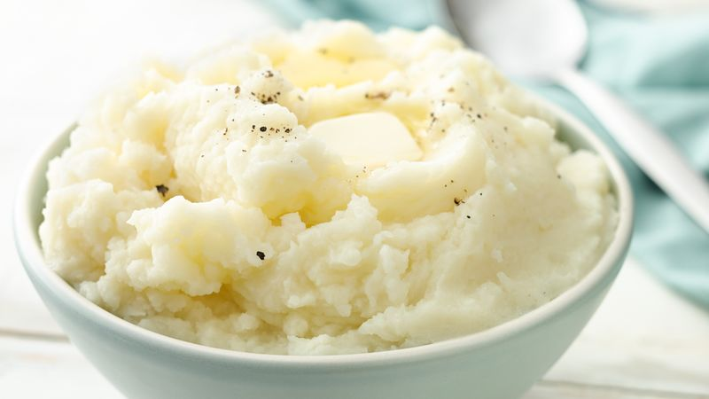

Mashed Potatoes

Description:
This is a recipe for mashed potatoes with butter
Ingrediants:
- 2-3 Large Potatoes
- Salt
- 2 Tablespoons of Butter
Steps:
- Peal the potatoe and then cut them into cubes an inch long and wide
- Place the potatoe cubes in a pan of water and set to boil
- After 30 minutes check to see if the potatoes are cooked by testing it with a fork
- Drain the pan of water and then mash potatoes
- Add butter as pototes are being mashed